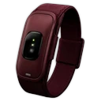

JARAK0m

0Kamera mati
pakai ← → ↑ ↓
Nova-Band
NOVA RUN
Kendalikan Nova dengan gerakan tubuhmu.
🙌 Angkat kedua tangan untuk mulai
Siap-siap!
Mundur sampai kepala sampai pinggul terlihat di kamera, lalu berdiri tegak di tengah.
Nova tersandung!
0meter
Nova-Band memantau detak jantung, pace, dan kadens dari lengan atas — saat kamu berlari sungguhan.
🙌 Angkat kedua tangan untuk main lagi